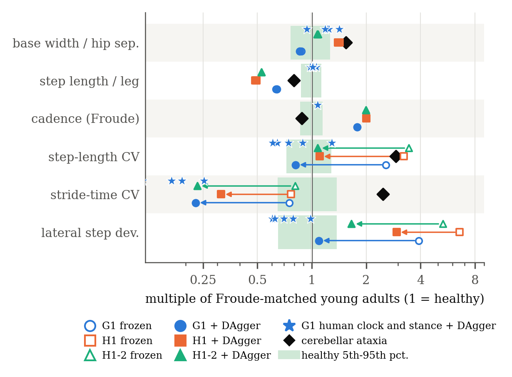

Humanoid locomotion · simulation (MuJoCo, Isaac Gym) · Manuscript prepared for IEEE RA-L (not yet submitted), 2026
Learned humanoids walk oddly, but “oddly” has no measure. I scored the official walking policies of three Unitree humanoids (G1, H1, H1-2) with the clinical gait measures used for cerebellar ataxia, normalised for body size. At their training sensor noise they scatter their feet sideways 2.1–2.9× as much as healthy young adults (in leg lengths). The scatter comes from the sensor noise, and the short, fast steps from a fixed gait clock; fixing both brings G1 near healthy gait. All of this is in simulation; no real robot has been tested.
Mu-Hua Wang · National Yang Ming Chiao Tung University · sole author
G1 on two lanes over a pit, 3 cm to spare on each side of the sole, at the training sensor noise. Left: Unitree’s official policy. Right: the same policy after self-distillation (DAgger). Real-time replay of one walk each, the first noise seed with that outcome: not a statistic. Over 20 walks each, the official policy crosses in 0 of 20 and the student in 20 of 20.
From simulated foot and pelvis trajectories I compute the measures clinicians use for cerebellar ataxia, including the lateral step deviation of Ilg et al. (2020), and divide each by the value of 24 healthy young adults (Fukuchi et al., 2018) matched at the same Froude number. Each condition is 20 walks of 35 s at 0.5 m/s.
G1 / H1 / H1-2, × healthy young adults (healthy range 0.65–1.37), 20 walks each
the same policies read without noise: more regular than people
Drag the slider. Touch-downs of G1 from one simulated walk per noise level (noise seed 0, 24 steps after the first 5 s; not a statistic), top view with the lateral axis exaggerated; dark dots are the left foot, red the right. The two numbers are the means over 10 walks (20 at 1×), as multiples of healthy young adults.

Gait measures as a multiple of Froude-matched healthy young adults (1, log scale; band: their 5th–95th percentile). Open: official policies at training noise. Filled: after DAgger. Stars: G1 retrained with a human-fitted clock and stance window, then distilled.
Only the spatial step variability is ataxia-like. Cadence goes the opposite way from patients (1.78–2.00× healthy), and once base width is divided by hip separation the stance is not wide. Reading the sensors without noise removes the excess; the policies leave the healthy range at 0.37, 0.18 and 0.20 times their training noise (G1, H1, H1-2). A policy that imitates human motion capture (GMT) scatters its feet too (3.35×). The same G1 policy, put back into the simulator it was trained in (Isaac Gym), gives 3.92× with noise and 0.37× without, so the effect is not a simulator artefact.
| Lateral step deviation (× healthy) | G1 | H1 | H1-2 |
|---|---|---|---|
| Official policy, training noise | 3.91 | 6.56 | 5.31 |
| + fitted Kalman-style observer | 4.09 | 8.47 | 5.66 |
| Self-distilled (DAgger), 3 training seeds | 1.05–1.20 | 2.90–2.94 | 1.57–1.66 |
The student starts as a copy of the policy and learns to output, on noisy readings, the action the frozen policy takes on clean ones. The observer reduces the estimation error but not the scatter, and on G1 3 of 20 walks fall with it. On lanes with 3 cm to spare, the official G1 policy crosses in 0 of 20 walks, its student in 20 of 20.
Share of 20 walks that cross two lanes over a pit, starting 4 m from the robot, at the training noise. Dark: official policy and its first student. Red: G1 retrained with the human clock and stance window, fine-tuned with steering (and, lower rows, with small pushes); each training seed shown separately. They differ widely between seeds. The lanes start later than in the video above, after the start-up transient of the slower clocks, so the official policy’s rate differs from its 0 of 20 there.
All three policies step to a fixed 0.8 s gait clock at every speed. I retrained G1 in Isaac Gym with a clock whose period follows the human cadence–speed relation, a floor on stance width and a stance window fitted to people, then distilled it. On four of five training seeds no battery measure lies above the healthy range: lateral step deviation 0.60–0.79× and double support 0.86–0.92× healthy. The remaining seed (seed 3) walks too wide (base width 1.42×).
G1 at 0.5 m/s and training noise, 20 walks. Grey band: healthy young adults’ 5th–95th percentile; line at 1: their mean; diamonds: ataxia patients (Buckley et al., 2018; no value tabulated for lateral step deviation).
A prediction that missed: the noise level at which a teacher policy scores what its student will score has a median of 0.31× the training noise over ten teachers. Registered in advance for two new seeds, it predicted 1.92 and 1.60×; the students scored 1.64 and 1.36×, outside both predicted intervals, though within the 25% tolerance registered with them.
Real-time replay in simulation, 67 s, captions only. Each clip is one walk at the training noise; where a clip shows an outcome it is the first noise seed with that outcome, so the clips are not a statistic. The captions give the rates: 0 of 20 against 20 of 20 on the lanes; the first student survives pushes of 0.3 body weight in 25% of 20 walks, the final student in 100%.
Scope: simulation only. The sensor noise is the noise the policies were trained with, not a measured noise of a real G1, which is unknown. Retraining covers G1 only, with five seeds for the final method. The healthy reference is 24 young adults walking on a treadmill, which lowers their variability, so the robots’ ratios may read high. “Ataxia-like” describes where the foot lands and nothing more; the cause found, noisy sensing, is closer to sensory than to cerebellar ataxia. The decisive test, injecting the training noise on a real G1 and comparing foot placement of the official and the distilled policy, has not been done.